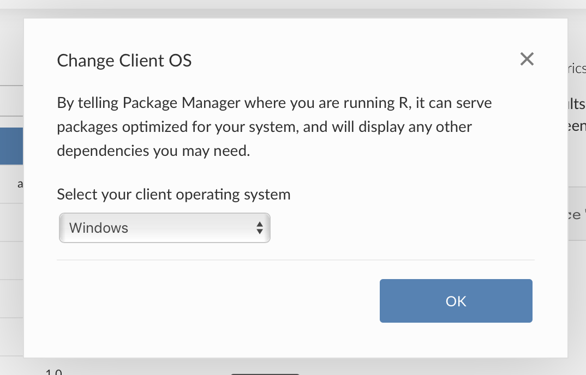

2020-02-27
RStudio Package Manager 1.1.2 introduces beta support for Windows package binaries. These binaries make it easier and faster to install R packages on Windows Desktop. With this release, all the benefits of Package Manager are available to desktop users including versioned repositories, curated subsets of CRAN, centralized access to CRAN, Git, local packages, and usage tracking. Now data scientists on Windows can easily share work, collaborate, and spend more time doing analysis instead of debugging packages.

In addition to adding support for Windows package binaries, the 1.1.2 release includes:
Please review the full release notes.
Upgrade Planning
Upgrading to 1.1.2 from 1.1.0 is a minor upgrade. However, be aware that this upgrade may take up to 30 minutes to complete. If you are upgrading a multi-node installation, allow the first node to update completely before upgrading other nodes. If you are upgrading from an earlier version, be sure to consult the release notes for the intermediate releases, as well.
Package management is critical for making your data science reproducible, over time, and across your organization. Wondering where you should start? Email us, our product team is happy to help!
Download the 45-day evaluation today to see how RStudio Package Manager can help you, your team, and your entire organization access and organize R packages. Learn more with our online demo server or latest webinar.